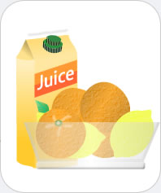

|  |
Citrus Fruit
Chemicals you may find: Citric acid Ascorbic acid |
| Citrus fruits contain large amounts of citric acid, which is responsible for their sharp and sour taste. They also contain ascorbic acid (Vitamin C), terpenes, flavonoids, and many other chemicals. Citric acid is an important compound that occurs in the metabolism of aerobic organisms, when carbohydrates, fats, and protein are converted to energy, carbon dioxide and water. Ascorbic acid, also known as Vitamin C is a weak acid that is essential to life and employed in the production of neurotransmitters and connective tissues. It is also important as a component of plasma. A deficiency in Vitamin C can cause bleeding, anemia, scurvy, and possibly the loss of teeth. | |